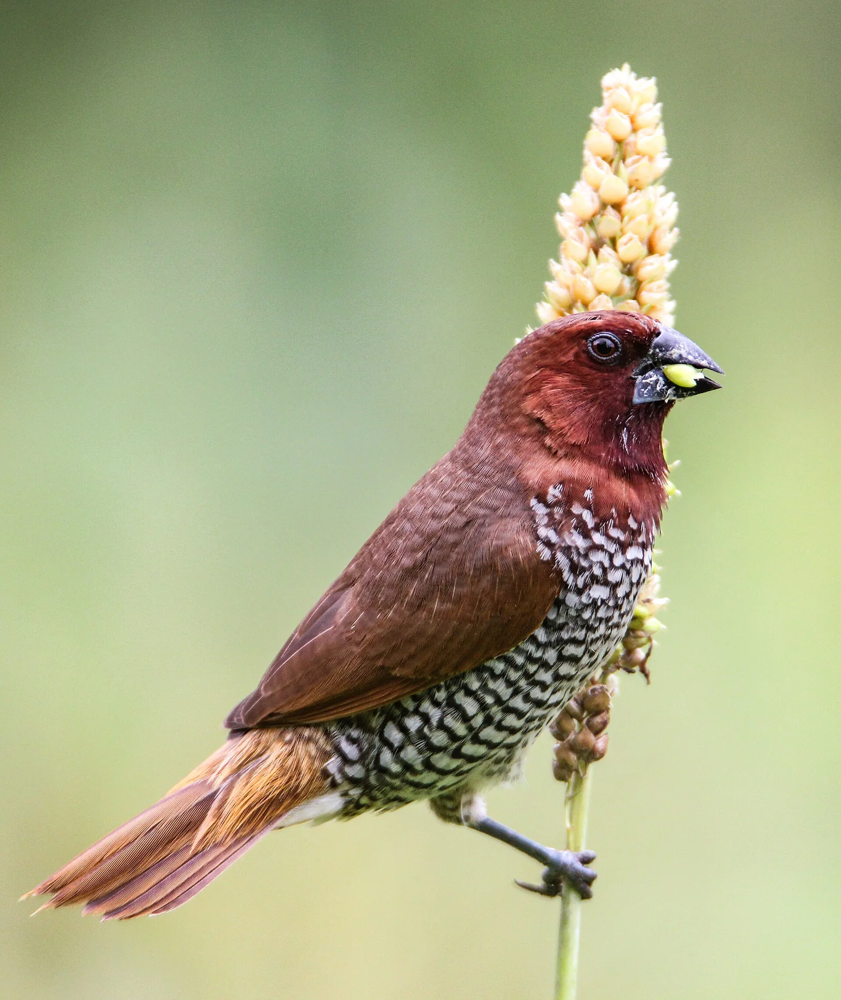

返回名录NO. 020 · 林鸟与城市常客 / 梅花雀科 · Estrildidae
斑文鸟
Lonchura punctulata肚子上画满鱼鳞的小鸟
胸腹上一片片深色鳞状斑，像穿了件鱼鳞甲。斑文鸟结成十几只的小群，在草籽成熟的田边起伏飞过，落下后一头扎进草丛，只露出一排小脑袋。
图集 Plates & Photographs
一张科学绘图（博物画）用于对照形态与色块，两张野外摄影记录它在真实光线里的样子。点击任意一张可放大。
辨识特征 Identification
- 下体喉部栗褐色，胸腹部白色而每根羽毛边缘深色，形成清晰的鳞状斑纹——最稳的识别点。
- 上体头、颈、背栗褐色，羽缘较浅，整体呈细密的鳞状感。
- 喙喙粗厚、呈圆锥形，灰蓝色，专门用来咬碎草籽与谷粒。
- 尾尾短，呈楔形，中央尾羽较长而尖。
习性 Behaviour
典型的植食性小鸟，主食草籽与谷物，也吃少量昆虫。极合群，常十几只至数十只一起活动，飞行时呈明显的波浪状并伴随齐鸣。巢为大型球状，用草叶编织，筑于灌丛或树上。华南留鸟，稻田与草地边缘最常见。
鸣声 Voice
野外鸣声录音
点击波形可跳转 · 建议佩戴耳机
0:00 / 0:52
录音 K L Vinay · 许可 CC BY-SA 4.0
· 原始文件
叫声为轻柔的「kitty-kitty」或「peet-peet」，音量不大但群体齐鸣时较为明显；飞行时叫声连续。
在珠海去哪里找 Where to Watch
- 斗门稻田
- 金湾草坡
- 横琴湿地边缘
- 各公园草地
观察提示
与白腰文鸟的区别：斑文鸟胸腹有鳞斑、喙灰蓝；白腰文鸟通体棕褐、腰白、喙灰黑且更粗。两者常混群。